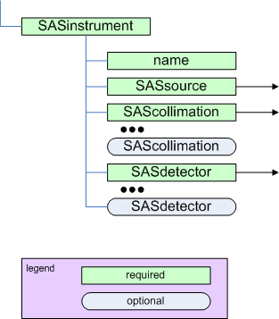
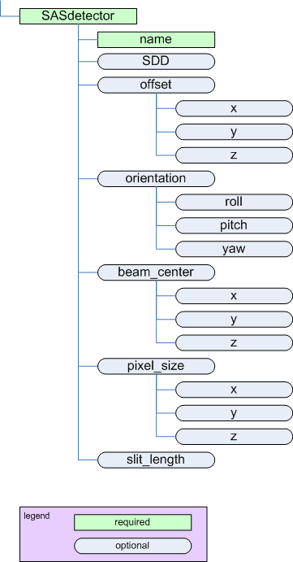
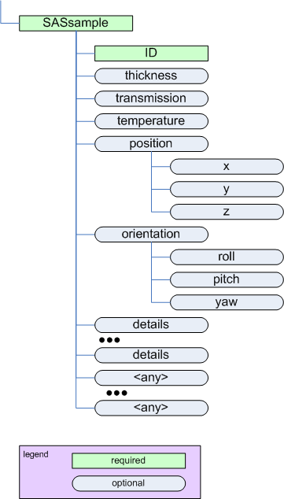
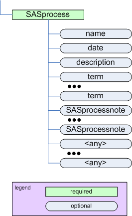

3.3.3.1. NXcanSAS¶
Status:
application definition, extends NXobject, version 1.0
Description:
Implementation of the canSAS standard to store reduced small-angle scattering data of any dimension.
For more details, see:
- http://www.cansas.org/
- http://www.cansas.org/formats/canSAS1d/1.1/doc/
- https://github.com/canSAS-org/NXcanSAS_examples
The minimum requirements for reduced small-angle scattering data as described by canSAS are summarized in the following figure:

The minimum requirements for reduced small-angle scattering data. (
full image)Implementation of canSAS standard in NeXus
This application definition is an implementation of the canSAS standard for storing both one-dimensional and multi-dimensional data.
The canSAS data format has a structure similar to NeXus, not identical. To allow canSAS data to be expressed in NeXus, yet identifiable by the canSAS standard, an additional group attribute
canSAS_classwas introduced. Here is the mapping of some common groups.
group (*) NX_class canSAS_class sasentry NXentry SASentry sasdata NXdata SASdata sasdetector NXdetector SASdetector sasinstrument NXinstrument SASinstrument sasnote NXnote SASnote sasprocess NXprocess SASprocess sasprocessnote NXcollection SASprocessnote sastransmission NXdata SAStransmission_spectrum sassample NXsample SASsample sassource NXsource SASsource (*) The name of each group is a suggestion, not a fixed requirement and is chosen as fits each data file. See the section on defining NXDL group and field names.
In canSAS1d, orientation (rotations of sample or detector) are described in terms of roll, pitch, and yaw. NeXus uses different terms as shown in the next table:
canSAS1d NeXus roll polar_anglepitch x_axis_rotation(not expected or defined here)yaw azimuthal_angle
{kind=link}
Symbols:
No symbol table
- Groups cited:
- NXaperture, NXcollection, NXcollimator, NXdata, NXdetector, NXentry, NXinstrument, NXnote, NXprocess, NXsample, NXsource
Structure:
(entry): NXentry
Place the canSAS
SASentrygroup as a child of a NeXusNXentrygroup (when data from multiple techniques are being stored) or as a replacement for theNXentrygroup.Note: It is required for all numerical objects to provide a units attribute that describes the engineering units. Use the Unidata UDunits [1] specification as this is compatible with various community standards.
[1] The UDunits specification also includes instructions for derived units. @default: NX_CHAR
@canSAS_class: NX_CHAR
Official canSAS group: SASentry
Obligatory value:
SASentry@version: NX_CHAR
Describes the version of the canSAS standard used to write this data. This must be a text (not numerical) representation. Such as:
@version="1.0"Obligatory value:
1.0definition: NX_CHAR
Official NeXus NXDL schema to which this subentry conforms.
Obligatory value:
NXcanSAStitle: NX_CHAR
Title of this SASentry.run: NX_CHAR
Run identification for this SASentry. For many facilities, this is an integer. Use multiple instances of
runas needed, keeping in mind that HDF5 requires unique names for all entities in a group.@name: NX_CHAR
Optional string attribute to identify this particular run. Could use this to associate (correlate) multiple SASdata elements with run elements.(data): NXdata
A SASData group contains reduced a single small-angle scattering data set that can be represented as \(I(\vec{Q})\) or \(I(|\vec{Q}|)\).

The SASdata element (
full image)Q can be either a vector (\(\vec{Q}\)) or a vector magnitude (\(|\vec{Q}|\))
The name of each SASdata must be unique within a SASentry group. Such as
sasdata01.A SASdata group has several attributes:
- I_axes
- Q_indices
- Mask_indices
To indicate the dependency relationships of other varied parameters, use attributes similar to
@Mask_indices(such as@Temperature_indicesor@Pressure_indices).@canSAS_class: NX_CHAR
Official canSAS group: NXcanSAS (contributed definition); SASdata
Obligatory value:
SASdata@signal: NX_CHAR
Name of the default data field.
Obligatory value:
I: For canSAS SASdata, this is always “I”.@I_axes: NX_CHAR
String array that defines the independent data fields used in the default plot for all of the dimensions of the signal field (the signal field is the field in this group that is named by the
signalattribute of this group). One entry is provided for every dimension of theIdata object. Such as:@I_axes="Temperature", "Time", "Pressure", "Q", "Q"Since there are five items in the list, the intensity field of this example
Imust be a five-dimensional array (rank=5).@I_uncertainties: NX_CHAR
Generally, this is the estimate of the uncertainty of each \(I\). Typically the estimated standard deviation. For Poisson statistics, use \(1/\sqrt{I}\).
(optional for numerical arrays) Name of the data object (in this SASdata group) that provides the uncertainty to be used for data analysis.
Idev is the canonical name from the 1D standard. The multi-D standard allows for this name to be described in this attribute. Such as:
@I_uncertainties="Idev"@Q_indices: NX_INT
Integer or integer array that describes which indices (of the \(I\) data object) are used to reference the
Qdata object. The items in this array use zero-based indexing. Such as:@Q_indices=1,3,4which indicates that
Qrequires three indices from the \(I\) data object: one for time and two for Q position. Thus, in this example, theQdata is time-dependent: \(\vec{Q}(t)\).@Q_uncertainties: NX_CHAR
(optional for numerical arrays) Generally, this is the estimate of the uncertainty of each \(Q\). Typically the estimated standard deviation. Names the data object (in this SASdata group) that provides the uncertainty to be used for data analysis. Such as:
@Q_uncertainties="Qdev"Can use this to describe the slit-length at each datum. Use a subgroup to describe any supplementary uncertainty data.
To specify two-dimensional uncertainty, such as (dQw, dQl), use a string array, such as:
@Q_uncertainties="dQw", "dQl"@Mask_indices: NX_CHAR
Integer or integer array that describes which indices (of the \(I\) data object) are used to reference the
Maskdata object. The items in this array use zero-based indexing. Such as:@Mask_indices=3,4which indicates that Q requires two indices from the \(I\) data object for Q position.
Q: NX_NUMBER {units=NX_PER_LENGTH}
Array of \(Q\) data to accompany \(I\).

The \(\vec{Q}\) geometry. (
full image)\(Q\) may be represented either as the three-dimensional scattering vector \(\vec{Q}\) or by the magnitude of the scattering vector, \(|\vec{Q}|\).
\[|\vec{Q}| = (4\pi/\lambda) sin(\theta)\]When we write \(Q\), we may refer to either or both of \(|\vec{Q}|\) or \(\vec{Q}\), depending on the context.
I: NX_NUMBER
Array of intensity (\(I\)) data.
The intensity may be represented in one of these forms:
absolute units: \(d\Sigma/d\Omega(Q)\) differential cross-section per unit volume per unit solid angle (typical units: 1/cm/sr)
absolute units: \(d\sigma/d\Omega(Q)\) differential cross-section per unit atom per unit solid angle (typical units: cm^2)
arbitrary units: \(I(Q)\) usually a ratio of two detectors but units are meaningless (typical units: a.u.)
This presents a few problems for analysis software to sort out when reading the data. Fortunately, it is possible to analyze the units to determine which type of intensity is being reported and make choices at the time the file is read. But this is an area for consideration and possible improvement.
One problem arises with software that automatically converts data into some canonical units used by that software. The software should not convert units between these different types of intensity indiscriminately.
A second problem is that when arbitrary units are used, then the set of possible analytical results is restricted. With such units, no meaningful volume fraction or number density can be determined directly from \(I(Q)\).
In some cases, it is possible to apply a factor to convert the arbitrary units to an absolute scale. This should be considered as a possibility of the analysis process.
Idev: (optional) NX_NUMBER {units=NX_PER_LENGTH}
Estimated uncertainty (usually standard deviation) in \(I\). Must have the same units as \(I\).
When present, the name of this field is also recorded in the uncertainties attribute of I, as in:
I/@uncertainties="Idev"Qdev: (optional) NX_NUMBER {units=NX_PER_LENGTH}
Estimated uncertainty (usually standard deviation) in \(Q\). Must have the same units as \(Q\).
When present, the name of this field is also recorded in the uncertainties attribute of Q, as in:
Q/@uncertainties="Qdev" Q/@uncertainties="dQw", "dQl"dQw: (optional) NX_NUMBER {units=NX_PER_LENGTH}
\(Q\) resolution along the axis of scanning (the high-resolution slit width direction). Useful for defining resolution data from slit-smearing instruments such as Bonse-Hart geometry. Must have the same units as \(Q\).
When present, the name of this field is also recorded in the uncertainties attribute of Q, as in:
Q/@uncertainties="dQw", "dQl"dQl: (optional) NX_NUMBER {units=NX_PER_LENGTH}
\(Q\) resolution perpendicular to the axis of scanning (the low-resolution slit length direction). Useful for defining resolution data from slit-smearing instruments such as Bonse-Hart geometry. Must have the same units as \(Q\).
When present, the name of this field is also recorded in the uncertainties attribute of Q, as in:
Q/@uncertainties="dQw", "dQl"Qmean: (optional) NX_NUMBER {units=NX_PER_LENGTH}
Mean value of \(Q\) for this data point. Useful when describing data that has been binned from higher-resolution data. It is unexpected forQandQmeanto have different units.ShadowFactor: (optional) NX_CHAR {units=NX_DIMENSIONLESS}
A numerical factor applied to pixels affected by the beam stop penumbra. Used in data files from NIST/NCNR instruments.
See: J.G. Barker and J.S. Pedersen (1995) J. Appl. Cryst. 28, 105-114.
(instrument): NXinstrument
This the SAS instrument.
The SASinstrument element (
full image)@canSAS_class: NX_CHAR
Official canSAS group: NXcanSAS (contributed definition); SASinstrument
Obligatory value:
SASinstrument(collimator): (optional) NXcollimator
Description of a collimating element in the instrument.

The SAScollimation element (
full image)@canSAS_class: NX_CHAR
Official canSAS group: NXcanSAS (contributed definition); SAScollimation
Obligatory value:
SAScollimationlength: (optional) NX_NUMBER {units=NX_LENGTH}
Amount/length of collimation inserted (as on a SANS instrument)distance: (optional) NX_NUMBER {units=NX_LENGTH}
Distance from this collimation element to the sampleaperture: (optional) NXaperture
Name of “aperture” is only a suggestion. Base class could be either NXpinhole or NXslit. But NXaperture is generic and limits the variation in data files.
shape: NX_CHAR
describe the type of aperture (pinhole, 4-blade slit, Soller slit, ...)x_gap: (optional) NX_NUMBER {units=NX_LENGTH}
opening along the \(x\) axisy_gap: (optional) NX_NUMBER {units=NX_LENGTH}
opening along the \(y\) axis(detector): (optional) NXdetector
Description of a detector in the instrument.
The SASdetector element (
full image)@canSAS_class: NX_CHAR
Official canSAS group: NXcanSAS (contributed definition); SASdetector
Obligatory value:
SASdetectorname: NX_CHAR
Identifies the name of this detectorSDD: (optional) NX_NUMBER {units=NX_LENGTH}
Distance between sample and detector.
Note: In NXdetector, the
distancefield records the distance to the previous component ... most often the sample. This use is the same asSDDfor most SAS instruments but not all. For example, Bonse-Hart cameras have one or more crystals between the sample and detector.We define here the field
SDDto document without ambiguity the distance between sample and detector.slit_length: (optional) NX_NUMBER {units=NX_PER_LENGTH}
Slit length of the instrument for this detector, expressed in the same units as \(Q\).x_position: (optional) NX_CHAR
Location of the detector in \(x\)y_position: (optional) NX_CHAR
Location of the detector in \(y\)polar_angle: (optional) NX_CHAR
Rotation of the detector about the \(z\) axis (roll)azimuthal_angle: (optional) NX_CHAR
Rotation of the detector about the \(y\) axis (yaw)beam_center_x: (optional) NX_FLOAT {units=NX_LENGTH}
Position of the beam center on the detector.
This is the x position where the direct beam would hit the detector plane. This is a length, not a pixel position, and can be outside of the actual detector.
beam_center_y: (optional) NX_FLOAT {units=NX_LENGTH}
Position of the beam center on the detector.
This is the y position where the direct beam would hit the detector plane. This is a length, not a pixel position, and can be outside of the actual detector.
x_pixel_size: (optional) NX_FLOAT {units=NX_LENGTH}
Size of each detector pixel. If it is scalar all pixels are the same sizey_pixel_size: (optional) NX_FLOAT {units=NX_LENGTH}
Size of each detector pixel. If it is scalar all pixels are the same size(source): (optional) NXsource
Description of the radiation source.

The SASsource element (
full image)@canSAS_class: NX_CHAR
Official canSAS group: NXcanSAS (contributed definition); SASsource
Obligatory value:
SASsourceradiation: NX_CHAR
Name of the radiation used. Note that this is not the name of the facility!
Any of these values:
Spallation Neutron SourcePulsed Reactor Neutron SourceReactor Neutron SourceSynchrotron X-ray SourcePulsed Muon SourceRotating Anode X-rayFixed Tube X-rayUV LaserFree-Electron LaserOptical LaserIon SourceUV Plasma Sourceneutronx-raymuonelectronultravioletvisible lightpositronprotonbeam_shape: (optional) NX_CHAR
Text description of the shape of the beam (incident on the sample).incident_wavelength: (optional) NX_NUMBER {units=NX_WAVELENGTH}
wavelength (\(\lambda\)) of radiation incident on the samplewavelength_min: (optional) NX_NUMBER {units=NX_WAVELENGTH}
Some facilities specify wavelength using a range. This is the lowest wavelength in such a range.wavelength_max: (optional) NX_NUMBER {units=NX_WAVELENGTH}
Some facilities specify wavelength using a range. This is the highest wavelength in such a range.incident_wavelength_spread: (optional) NX_NUMBER {units=NX_WAVELENGTH}
Some facilities specify wavelength using a range. This is the width (FWHM) of such a range.beam_size_x: (optional) NX_NUMBER {units=NX_LENGTH}
Size of the incident beam along the x axis.beam_size_y: (optional) NX_NUMBER {units=NX_LENGTH}
Size of the incident beam along the y axis.(sample): NXsample
Description of the sample.
The SASsample element (
full image)@canSAS_class: NX_CHAR
Official canSAS group: NXcanSAS (contributed definition); SASsample
Obligatory value:
SASsamplename: NX_CHAR
ID: Text string that identifies this sample.thickness: (optional) NX_FLOAT {units=NX_LENGTH}
Thickness of this sampletransmission: (optional) NX_NUMBER {units=NX_DIMENSIONLESS}
Transmission (\(I/I_0\)) of this sample. Note that there is no units attribute as this number is dimensionless.temperature: (optional) NX_NUMBER {units=NX_TEMPERATURE}
Temperature of this sample.details: (optional) NX_CHAR
Any additional sample details.x_position: (optional) NX_CHAR
Location of the sample in \(x\)y_position: (optional) NX_CHAR
Location of the sample in \(y\)polar_angle: (optional) NX_CHAR
Rotation of the sample about the \(z\) axis (roll)azimuthal_angle: (optional) NX_CHAR
Rotation of the sample about the \(y\) axis (yaw)(process): (optional) NXprocess
Description of a processing or analysis step.
The SASprocess element (
full image)Add additional fields as needed to describe value(s) of any variable, parameter, or term related to the SASprocess step. Be sure to include units attributes for all numerical fields.
@canSAS_class: NX_CHAR
Official canSAS group: NXcanSAS (contributed definition); SASprocess
Obligatory value:
SASprocessname: (optional) NX_CHAR
Optional name for this data processing or analysis stepdate: (optional) NX_DATE_TIME
Optional date for this data processing or analysis step. [2]
[2] (1, 2) ISO-8601 standard time representation.
NeXus dates and times are reported in ISO-8601 (e.g.,
yyyy-mm-ddThh:mm:ss) or modified ISO-8601 (e.g.,yyyy-mm-dd hh:mm:ss).See: http://www.w3.org/TR/NOTE-datetime or http://en.wikipedia.org/wiki/ISO_8601 for more details.
description: (optional) NX_CHAR
Optional description for this data processing or analysis stepterm: (optional) NX_CHAR
Specifies the value of a single variable, parameter, or term (while defined here as a string, it could be a number) related to the SASprocess step.
Note: The name term is not required, it could take any name, as long as the name is unique within this group.
(note): (optional) NXnote
Any additional notes or subprocessing steps will be documented here.
An NXnote group can be added to any NeXus group at or below the NXentry group. It is shown here as a suggestion of a good place to consider its use.
sasprocessnote: (optional) NXcollection
Describes anything about SASprocess that is not already described.
Any content not defined in the canSAS standard can be placed at this point.
Note: The name sasprocessnote is not required, it could take any name, as long as the name is unique within the NXprocess group.
@canSAS_class: NX_CHAR
Official canSAS group: NXcanSAS (contributed definition); SASprocessnote
Obligatory value:
SASprocessnote(collection): (optional) NXcollection
Free form description of anything not covered by other elements.
@canSAS_class: NX_CHAR
Official canSAS group: NXcanSAS (contributed definition); SASnote
Obligatory value:
SASnote(data): (optional) NXdata
The SAStransmission_spectrum element
This describes certain data obtained from a variable-wavelength source such as pulsed-neutron source.

The SAStransmission_spectrum element (
full image)@canSAS_class: NX_CHAR
Official canSAS group: NXcanSAS (contributed definition); SAStransmission_spectrum
Obligatory value:
SAStransmission_spectrum@signal: NX_CHAR
Name of the default data field.
Obligatory value:
T: For SAStransmission_spectrum, this is always “T”.@T_axes: NX_CHAR
Obligatory value:
T: the wavelengths field (as a dimension scale) corresponding to this transmission@T_uncertainties: NX_CHAR
Estimate of the uncertainty of each transmission \(T\).@name: NX_CHAR
Identify what type of spectrum is being described. It is expected that this value will take either of these two values:
value meaning sample measurement with the sample and container can measurement with just the container @timestamp: NX_DATE_TIME
ISO-8601 time [2]lambda: NX_NUMBER {units=NX_WAVELENGTH}
Wavelength of the radiation.T: NX_NUMBER {units=NX_DIMENSIONLESS}
Transmission value (\(I/I_0\))Tdev: NX_NUMBER {units=NX_PER_LENGTH}
Estimated uncertainty (usually standard deviation) in \(T\). Must have the same units as \(T\).
When present, the name of this field is also recorded in the uncertainties attribute of T, as in:
T/@uncertainties="Tdev"
{kind=link}
{kind=link}
{kind=link}
{kind=link}
{kind=link}
{kind=link}
{kind=link}
{kind=link}
{kind=link}
{kind=link}
{kind=link}
{kind=link}
{kind=link}